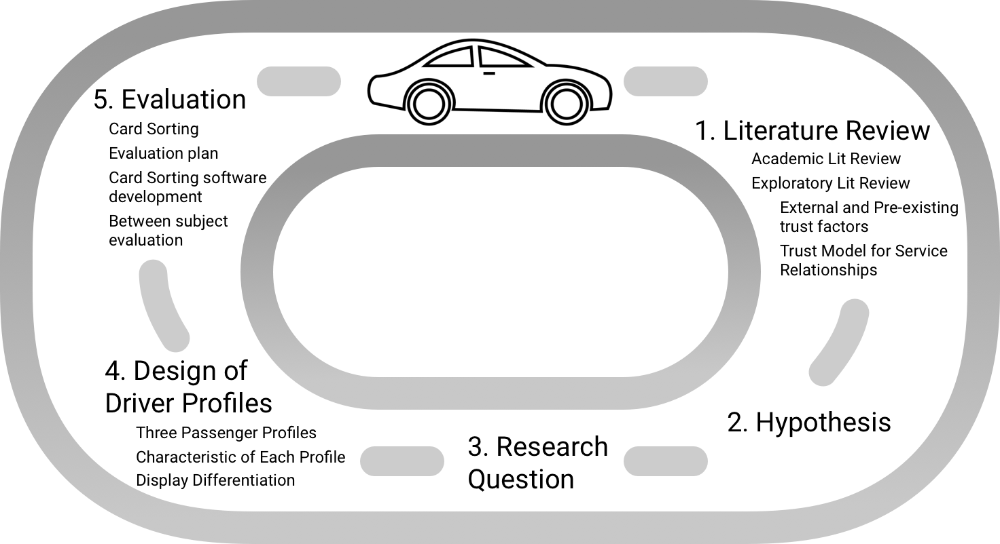
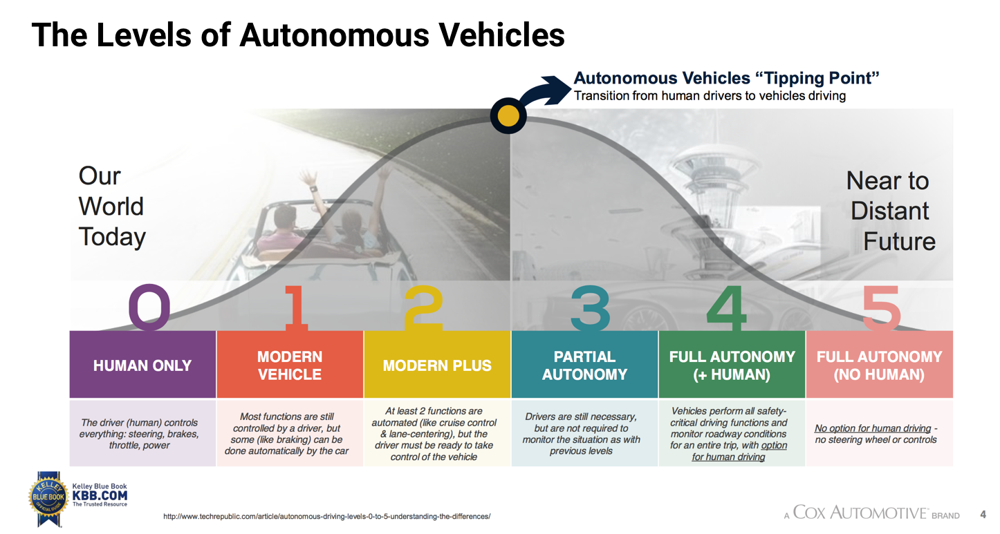
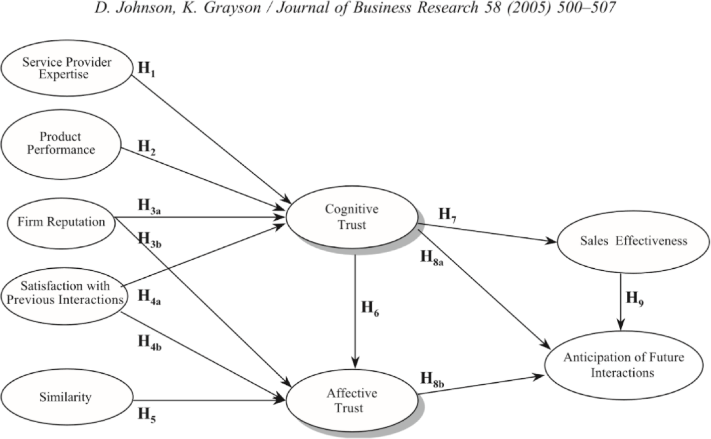
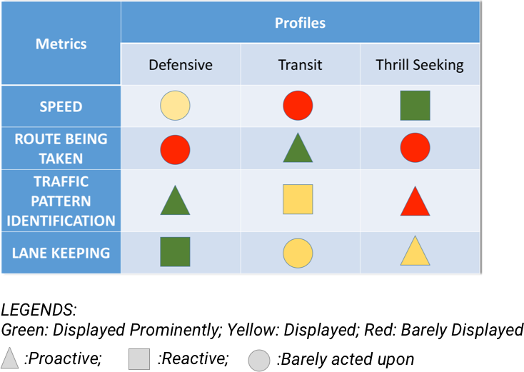

Backstory: ⅓ of Americans currently say they
would never buy an autonomous car, regardless of the promised safety and convenience. So it really
is about trust now, not just technology, for wider adaptation of these cars.
Impact: Create contextual, semi custom displays by transforming data into displayed
information and in turn, understanding into trust.
My Role: Design, Evaluation, Software Development
Timeline: August 2017 - Present
Team Members: Ishaani | Jason J Paul
Impact: Create contextual, semi custom displays by transforming data into displayed
information and in turn, understanding into trust.
My Role: Design, Evaluation, Software Development
Timeline: August 2017 - Present
Team Members: Ishaani | Jason J Paul
Research Question
"Given a single type of driving
environment (such as highway driving), do different passengers experience different levels of trust
in
the self driving car, when using Heads Up Displays (HUD) with information displayed in a way
personalized for their driving style."

Figure: Iterative Process followed in
clockwise direction
Following figure shows process carried out during the project. Rigorous literature review was
carried out before creating a hypothesis which led to emergence of our research question. In order
to test the hypothesis, three passenger profiles were created categorizing them into Thrill
Seeking, Defensive and Transit modes of driving.
For each profile, four metrics were chosen: Speed, Route being taken, Traffic pattern
identification and Lane Keeping. Finally to evaluate these characteristics assigned, card
sorting was used as the method of evaluation.
What are the external and preexisting trust factors and trust models?
TRUST FACTORS
In order to fully give control to someone/something else, it is important that the person
letting go of the control trusts the other person/system. Hence, it is important for autonomous
vehicles to develop this trust in their customers to improve their user experience and
confidence in the car.
"It’s not the technology. It’s user acceptance that’s holding us up right now"
We’re interested in trust models and displays as they apply to Level 5 Full Autonomy cars.

Figure: Levels of Autonomous Vehicle
ADAPTING TRUST MODEL
Adapting the
trust model into Head Level Displays, we re-define the factors involved in the trust model
Cognitive Trust: is a customer’s confidence or willingness to rely on a service
provider’s competence and reliability
Affective Trust: is the confidence one places in a partner on the basis of feelings
generated by the level of care and concern the partner demonstrates
Service Provider Expertise: Is this driver like me, given that I am an expert at
driving?
Seeing what the system is seeing helps humans understand their “driver”
Similarity: Is this driver like me? Does it care about me? Does it share my
values?

Figure: A model of customer
trust in service providers
Passengers do not care about how the Car AI is actually
thinking/perceiving/calculating. Passenger care about whether it’s “paying attention” to the
things
they would.
Displaying different information in different “Heads Up Display Profiles” that map to the
styles in which people drive can increase passenger trust of the AI driver system.
We categorized drivers into three profiles: Thrill Seeking, Defensive and Transit and used four
metric: Speed, Route being taken, Traffic pattern identification and Lane Keeping; in which
these three profiles would differ in terms of their response and display
prominence.
Thrill Seeking: Get me there as ENTERTAININGLY as possible. This profile seeks to
cater towards people who are more adventurous.
Defensive Driving: Get me there as SAFELY as possible. The main aim of passenger
falling in this profile is to get to their destination following all rules and regulations.
Transit Driving: Get me there as EFFICIENTLY as possible. The main aim of passenger
falling in this profile is to get to their destination by maximizing output using minimum
number of resources.
The color denotes emphasis level given to each area of driving metrics, and the shape
indicates the whether the information needs to be acted upon. The reason this second
dimension is important to differentiating the profiles and matching the display of the
metrics in that area with an appropriate level of context.

Figure: Different Profiles
perceive and react to various metrics
How well do the profiles represent driver behaviour?
We use In Person Computerized Between Subjects Closed Card Sorting technique to evaluate our
hypothesis:
Drivers can be divided into three driving profiles: Thrill Seeking, Defensive and Transit.
Users will be asked to categorize the visuals into the following sets
Thrill Seeking vs Non- Thrill Seeking
Defensive Vs Non - defensive
Transit Vs Non - transit
*The evaluation stage is still in progress and we are currently in the phase of developing custom
card sorting program to support the desired functionality
 Go to top of this section
Go to top of this section